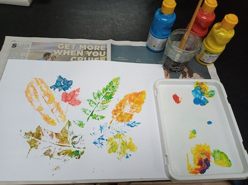

Leaf art

Leaves come in many shapes and sizes, and the
veins which transport water and nutrients to and from the
stems of the plant form beautiful branching patterns. (It is
interesting to ask children what they think the function of
these veins might be. It's really not very different to the
veins in our own bodies, which you can point out to them.)
These patterns can be transferred onto paper very simply, by
painting the underside of a leaf and then pressing it onto
the paper surface using a roller, a pad of paper or just
(rather messily!) the fingers. Best results will be obtained
with strongly coloured paint, such as acrylic or poster
paints, or inks. Be sure that whatever you use will wash off
hands and clothes with water, though. Watercolours will also
work if they are strong enough - e.g. from tubes rather than
from watercolour "pans".
There is no need to restrict yourself to one colour per
leaf. Especially in autumn you can encourage children to
notice the range of colours in the leaves - greens, yellows,
oranges, reds, browns and even purples. They could apply
several areas of colour to a single leaf and let them mix on
the leaf before printing. Notice what happens when two
colours combine. This way they can learn about colour
mixing.
Here are some other ideas for things to do with leaves:-
- Go on a leaf hunt,
collecting leaves of different shapes, sizes and
colours. This is especially good in the autumn, of
course.
- Leaf prints can be
used to construct a larger picture, such as a face or
a butterfly. Details can be added with a felt tip pen.
- Leaves can also be
pressed to preserve them. This can be done with a
flower press, but inserting leaves between two sheets
of paper inside a book or beneath a heavy weight will
work perfectly well. The same thing can be done with
petals, of course. Such pressed items can then be used
in collages, stuck on with any suitable glue, such as
PVA glue or wallpaper paste.
- Leaves can also be
used to create mobiles, wreaths, masks and many other
items which children can play with or display in their
bedroom. Ideas can be found at web sites such as this.